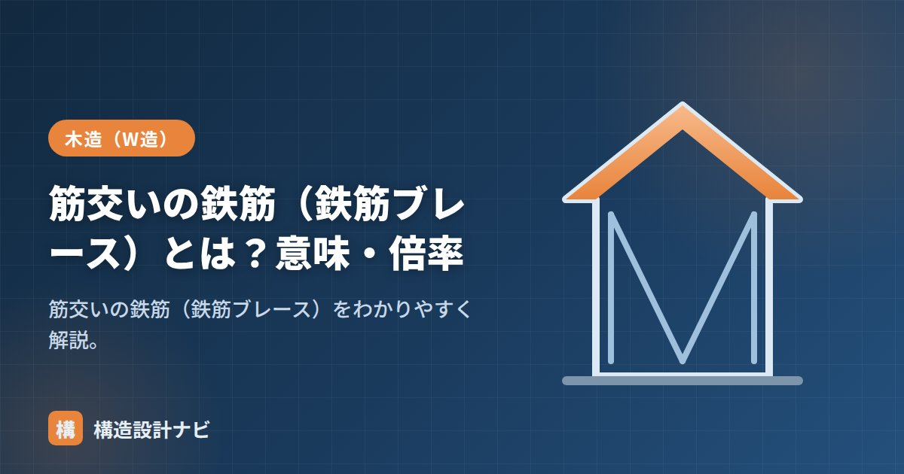

筋交いの鉄筋（鉄筋ブレース）とは？意味・倍率

木造の筋交いには木材のほか、鉄筋（丸鋼）を使った筋かい＝鉄筋ブレースもあります。細い鋼材の引張に強い性質を活かした耐力壁で、木の筋かいとは力の負担のしかたが大きく異なります。鉄骨造のブレース構造と同じ考え方が、木造の耐力壁にも応用されているとイメージすると理解しやすくなります。
- 鉄筋ブレースは丸鋼を斜めに張り、引張力だけで水平力に抵抗する筋かい。
- 圧縮側は座屈してしまうため負担できず、たすき掛け（2本1組）にして両方向に効かせる。
- ターンバックルで導入する初期張力（プレテンション）が、たわみを抑え性能を発揮させる鍵になる。
意味
鉄筋ブレース（丸鋼ブレース）は、細い丸鋼を斜めに張って引張で水平力に抵抗する筋かいです。両端をターンバックルで固定し、張力を調整します。断面が細いため意匠的にすっきりし、開口を確保しやすいのが特徴で、店舗のショーウインドウまわりなど、大きな開口が必要な壁面でよく使われます。
引張のみ負担する理由
丸鋼は断面が細く、圧縮力を受けると簡単に座屈（横に曲がってしまう現象）を起こします。座屈すると耐力を発揮できないため、鉄筋ブレースは実質的に引張力だけを負担する部材として設計します。木の筋かいが圧縮・引張の両方を負担できるのとは対照的です。そのため片方向だけでは、地震動が反対に振れたときに効かなくなってしまい、たすき掛け（×に2本）にして、常にどちらか一方が引張で効くようにするのが基本です。
ターンバックルと初期張力
ターンバックルは、ねじの回転でブレースの長さを微調整し張力を導入する金物です。施工時にたるみのない状態（初期張力）を与えておくことが重要で、たるんだままだと地震で建物が変形し始めてからようやく張力が効き始め、初期の変形が大きくなってしまいます。初期張力を適切に管理することで、小さな変形の段階からブレースが効き、耐力壁としての性能を発揮できます。
壁倍率と接合の考え方
鉄筋ブレースも、径や仕様に応じて壁倍率が定められた製品（認定耐力壁）があります。木の筋かいと同様、倍率に応じて端部を金物でしっかり緊結することが前提です。引張力を負担する部材である以上、端部が抜けたり緩んだりすると耐力壁として機能しないため、柱・土台への定着方法はメーカーの仕様に厳密に従う必要があります。
筋かいの種類（まとめ）
| 種類 | 負担 | 特徴 |
|---|---|---|
| 木の片筋かい | 圧縮・引張 | 一般的 |
| 木のたすき掛け | 両方向 | 倍率が高い |
| 鉄筋（丸鋼）ブレース | 引張のみ | 細い・たすき掛けで使う。開口を確保しやすい |
鉄筋ブレースは片側の1本だけでは反対方向の地震動に効かないため、必ずたすき掛けで計画します。また、初期張力が不足していると本来の壁倍率どおりの性能が出ないおそれがあるため、施工時のターンバックルの締め付け確認は欠かせません。木の筋かいのように圧縮も負担できるわけではない点を、設計・施工の双方で正しく理解しておく必要があります。
鉄筋ブレースの現場で、ターンバックルを締めたつもりで実は緩んだままの箇所を見つけたことがある。図面上の壁倍率は初期張力が入って初めて成立する数値なので、竣工前の増し締め確認を検査項目にきちんと入れておくと安心できる。
まとめ
- 鉄筋ブレースは丸鋼を斜めに張り、引張で水平力に抵抗する筋かい。
- 圧縮では座屈するため引張のみ負担。たすき掛けで両方向に効かせる。
- ターンバックルで初期張力を与えることが、性能を発揮させるポイント。
- 認定品に壁倍率が定められ、端部は金物で緊結する。